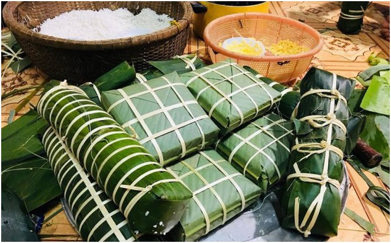
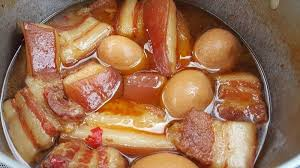
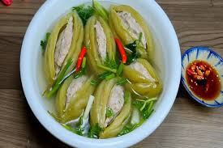
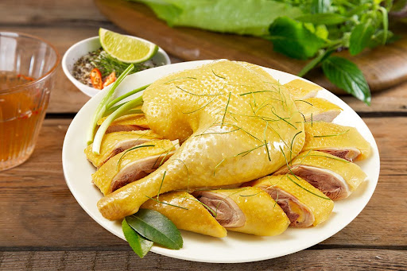
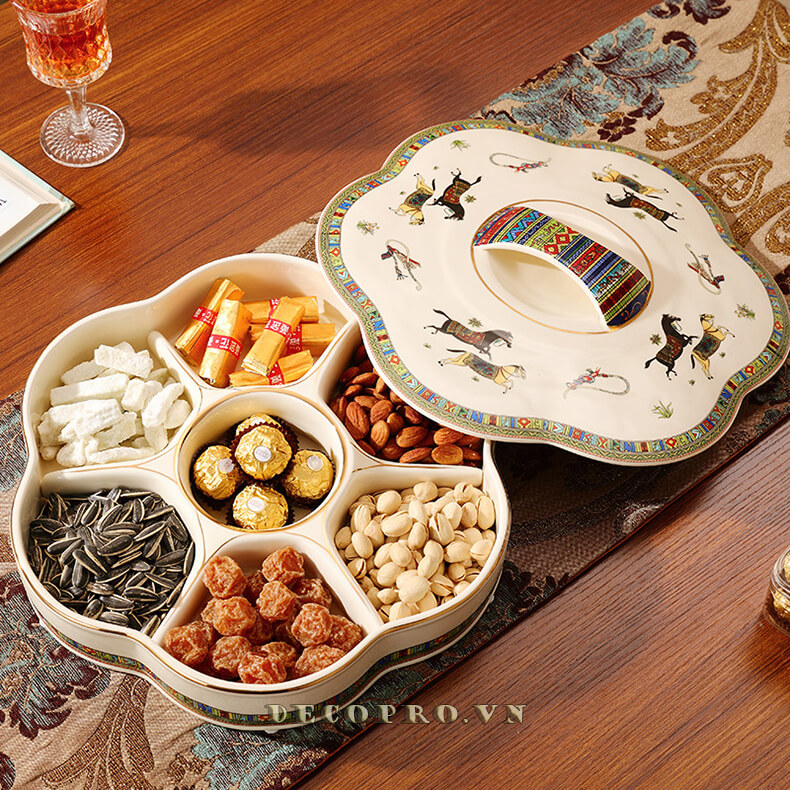
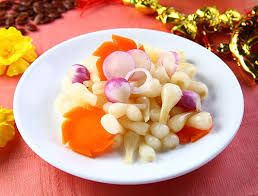

Ý Nghĩa Mâm Cỗ Tết
Mỗi món ăn trên mâm cỗ Tết là một lời cầu chúc tốt lành, gói trọn lòng biết ơn tổ tiên và hy vọng về một năm mới an khang.

Bánh Chưng & Bánh Tét
Biểu tượng của sự giao hòa giữa Trời và Đất, thể hiện lòng biết ơn cội nguồn và tổ tiên sâu sắc.

Thịt Kho Hột Vịt
Sự kết hợp vuông tròn tượng trưng cho cuộc sống an yên, gia đình hòa thuận và vạn sự vuông tròn.

Canh Khổ Qua
Mang ý nghĩa tinh thần "khó khổ đi qua", mong cầu những muộn phiền năm cũ tan biến để đón niềm vui mới.

Gà Luộc Lá Chanh
Đại diện cho sự khởi đầu thuận lợi, cầu mong phúc lộc và sự thịnh vượng đến với gia đình.

Khay Mứt Tết
Tượng trưng cho sự ngọt ngào, thắt chặt tình cảm gia đình và tình làng nghĩa xóm khi gặp gỡ đầu xuân.

Dưa Hành, Dưa Kiệu
Thể hiện sự hòa hợp âm dương và mong ước về một cuộc sống đủ đầy, cân bằng trong năm mới.